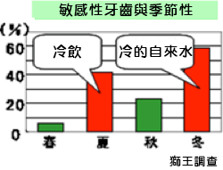
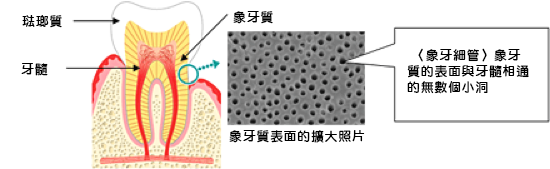
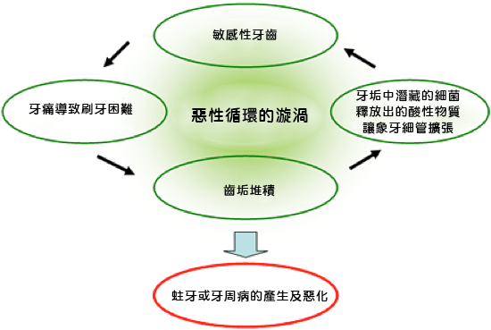
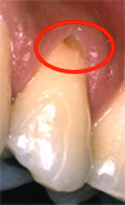
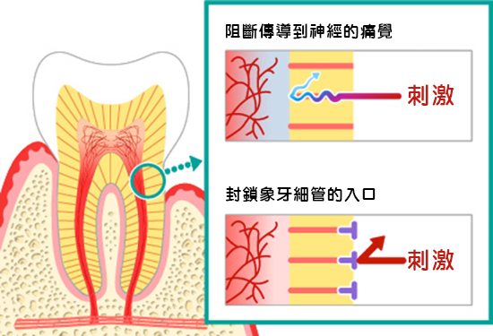

口腔保健知識庫
吃冰的東西會牙齒酸痛，可能是敏感性牙齒!
- 什麼是「敏感性牙齒」？
- 敏感性牙齒的原因是什麼呢？
- 敏感性牙齒是惡性循環的漩渦
- 知識補給站
- 露出的齒根也要小心蛀牙
- 吃冰的東西會牙齒酸痛：敏感性牙齒的護理方式
- (1) 敏感性牙齒的護理，要使用加入硝酸鉀和乳酸鋁等藥用成分的抗敏牙膏。持續使用是關鍵。
- (2) 刷牙時，牙刷以5-10公釐的小幅度來回輕輕刷動。建議使用在接觸牙齦時使用刷毛較軟的牙刷。
- (3) 漱口時不要用會讓牙齒酸痛的冷水，改用溫水。
- 千萬不要因為牙齒酸痛就不徹底刷牙。
- 建議輕柔小心的刷牙，用溫水來漱口。
- ※露出的齒根容易造成「牙根蛀蝕」，因此如果出現過敏性牙齒，建議及早前往牙醫診所諮詢診斷。
- 敏感性牙齒，就是對冰冷刺激造成牙齒酸痛的症狀。甜食和酸的東西也會造成刺激。根據獅王的調查，20-60歲的女性，大約5成會感到牙齒敏感。如圖所示，尤其在比較常喝冷飲的夏天，以及自來水冰冷的冬天，特別容易感到牙齒敏感。

- 為什麼會感到牙痛呢？牙痛的起因，是牙齒內層象牙質外露的部分（如圖）。
- 通常健康的牙齒由於琺瑯質和牙齦的包覆，象牙質不會外露，因此能避免冰冷的刺激。但是若在牙周病或是刷牙不當等原因造成牙齦退縮，牙根部分的象牙質就會外露。象牙質上有著牙髓（神經）連通的無數個小洞（稱為象牙細管），透過這些象牙質上的小洞，將受到的刺激傳導到神經產生痛覺。這些痛是暫時性的，刺激消除後就不痛了。

- 因為敏感性牙齒會疼痛，常導致無法確實刷牙，造成牙垢堆積。於是堆積的牙垢中潛藏的細菌釋放出的酸性物質，又刺激外露的象牙細管擴大，痛覺就逐漸加強。於是就更容易造成牙垢堆積，蛀牙或牙周病的產生及惡化，進入反覆的惡性循環當中。

- 牙齦退縮露出齒根上的象牙質，不只要注意發生敏感性牙齒，而且要小心蛀牙。象牙質的表面對抗酸蝕的能力，比琺瑯質來得弱，因此蛀掉的速度會比較快。而且比普通的蛀牙（琺瑯質的蛀蝕）來得更不容易感到痛，因此更難以治療。這樣的齒根蛀牙，即是所謂的「牙根蛀蝕」，患者通常是成人。

【牙根蛀蝕】的樣子；照片來源：東京牙醫大學 真木吉信教授
- 敏感性牙齒的症狀，也會在刷牙、漱口的時候出現。不過要是因為牙齒酸痛就不徹底刷牙的話，會導致症狀更加惡化，因此每天的照護很重要。以下將說明刷牙的重點。
【刷牙的重點】
- 硝酸鉀，能夠阻斷象牙質表面的小洞（象牙細管）傳導到神經的刺激（如圖，上方）。此外，乳酸鋁能夠封鎖象牙細管的入口，防止敏感性牙齒疼痛。（如圖，下方）
